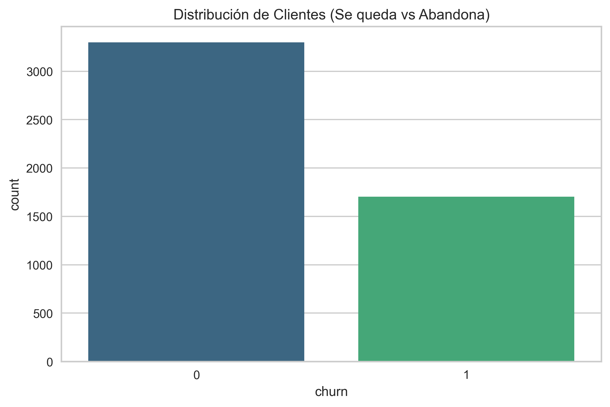
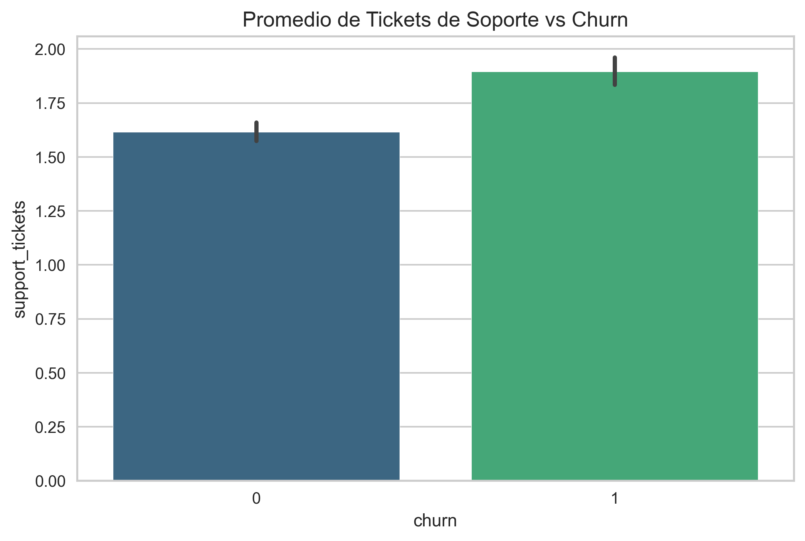
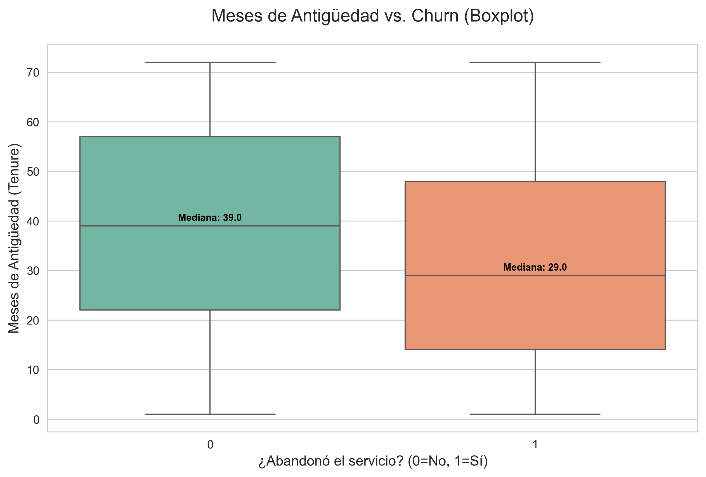
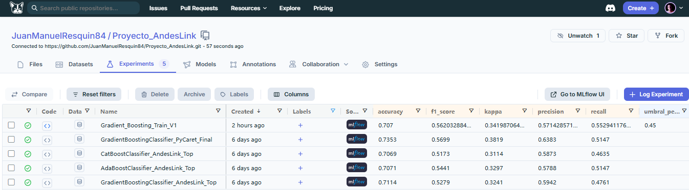

Control de versiones (Git + DVC)
Tracking de experimentos (MLflow + DagsHub)
API de inferencia robusta (FastAPI + Docker) con validaciones estrictas
CI/CD (GitHub Actions + pytest)
Monitoreo de datos (Evidently AI)
Observabilidad técnica (Prometheus + Grafana)
graph TD
DATA_RAW[(churn_sintetico.csv)] --> P_PREP["src/prepare.py"]
P_PREP --> DATA_PROC[(churn_procesado.csv)]
DATA_PROC --> P_TRAIN["src/train.py"]
P_TRAIN --> METRICS["models/metrics.json"]
subgraph MLOps_Stack ["DagsHub"]
TRACK["MLflow Tracking"]
REG["MLflow Registry V1"]
end
P_TRAIN --> TRACK
TRACK --> REG
subgraph Local ["Artefactos Locales (DVC)"]
M1["modelo_churn_GBC.pkl"]
S1["scaler.pkl"]
X1["X_columns.pkl"]
end
REG --> M1
P_TRAIN --> S1
P_TRAIN --> X1
subgraph Producción ["Docker Compose"]
API["FastAPI :8000
(Validación Estricta)"]
MONITOR["Monitor
(Loop Continuo)"]
EVI["Evidently UI :8001"]
PROM["Prometheus :9090"]
GRAF["Grafana :3000"]
end
M1 -.->|Volumen| API
S1 -.->|Volumen| API
X1 -.->|Validación| API
METRICS -.->|Accuracy Real| API
API --> LOGS["logs.csv"]
LOGS --> MONITOR
MONITOR --> EVI
API --> PROM
PROM --> GRAF
| Servicio | Puerto | Propósito | Características |
|---|---|---|---|
| FastAPI | 8000 | Inferencia en tiempo real | Alta demanda, <100ms latencia |
| Evidently UI | 8001 | Dashboards de monitoreo | Baja demanda, visualización |
| Monitor | ---- | Generación automática de reportes | reportes Loop continuo, reinicio automático |
Aislamiento: Si Evidently falla, la API sigue operando
Recursos: Evidently consume RAM/CPU solo cuando se visualiza
Independencia: Actualizas Evidently sin tocar la API
| Imagen | Tamaño | Python | Uso |
|---|---|---|---|
python:3.10-slim |
~150MB | 3.10 | API (compatibilidad con modelo) |
python:3.11-slim |
~150MB | 3.11 | Evidently (última versión estable) |
Compatibilidad: Evidently requiere Python 3.8+, 3.11 es la más reciente estable
Seguridad: Imagen "slim" = menos vulnerabilidades
Flexibilidad: Cada servicio usa la versión óptima para su propósito
Scikit-Learn: Gradient Boosting, CatBoost, AdaBoost
MLflow: Tracking + Model Registry
DVC: Versionado de datos y modelos
FastAPI + Uvicorn: API REST asíncrona con validaciones estrictas (Pydantic Literal + Field)
Docker + Docker Compose: Contenedorización con 5 servicios
GitHub Actions: CI/CD con pytest
Evidently AI: Data drift detection
Prometheus: Métricas de infraestructura
Grafana: Dashboards técnicos
Churn Rate: ~30-35% (dataset desbalanceado)
Implicación: Requiere métricas como Precision/Recall, no solo Accuracy

Hallazgo: Clientes que se van generan 1.9 tickets vs 1.6 los que se quedan
Acción: Mejorar calidad del soporte técnico

Hallazgo: Mediana de 40 meses (se quedan) vs 30 meses (se van)
Acción: Programas de fidelización para clientes < 2.5 años

{
"n_estimators": 100,
"learning_rate": 0.1,
"max_depth": 3,
"umbral_personalizado": 0.45 # Ajuste de negocio
}
| Métrica | Valor | Interpretación de Negocio |
|---|---|---|
| Precision | 0.5714 | De 100 alertas, 57 son reales → Evita desperdicio de presupuesto |
| Recall | 0.5529 | Detectamos 55% de los que se van → Cobertura balanceada |
| Kappa | 0.3419 | Acuerdo estadístico sólido → No es azar |
| Accuracy | 0.7070 | 7/10 predicciones correctas → Consistencia global |
Problema de Negocio: AndesLink tiene presupuesto limitado para campañas de retención.
Alta Precision (57%): No regalamos descuentos a clientes fieles (minimizamos Falsos Positivos)
Recall Moderado (55%): No saturamos al equipo de atención al cliente
ROI Optimizado: El dinero ahorrado en falsas alarmas financia promociones de mayor valor

| Endpoint | Método | Propósito |
|---|---|---|
/ |
GET | Health check |
/predict |
POST | Predicción de churn (con validación estricta) |
/metrics |
GET | Métricas Prometheus |
/docs |
GET | Swagger UI interactivo |
customer_age: int = Field(ge=18, le=100, description="Edad del cliente")
tenure_months: int = Field(ge=1, le=120, description="Meses de antigüedad")
monthly_charge: float = Field(ge=10.0, le=500.0, description="Cargo mensual")
avg_monthly_usage_gb: float = Field(ge=0.0, le=350.0, description="Uso mensual en GB")
contract_type: Literal["mensual", "anual"]
payment_method: Literal["credito", "debito", "efectivo", "transferencia"]
internet_service: Literal["fibra", "cable", "dsl"]
region: Literal["norte", "sur", "centro", "este", "oeste"]
{
"tenure_months": 7,
"monthly_charge": 58.23,
"total_charges": 326.50,
"support_tickets": 2,
"late_payments": 1,
"avg_monthly_usage_gb": 81.83,
"contract_type": "mensual",
"payment_method": "transferencia",
"internet_service": "cable",
"has_streaming": 0,
"has_security_pack": 1,
"num_products": 3,
"region": "centro",
"customer_age": 53,
"is_promo": 1
}
{
"tenure_months": 34,
"monthly_charge": 89.99,
"total_charges": 3059.66,
"support_tickets": 0,
"late_payments": 0,
"avg_monthly_usage_gb": 450.25,
"contract_type": "anual",
"payment_method": "credito",
"internet_service": "fibra",
"has_streaming": 1,
"has_security_pack": 1,
"num_products": 5,
"region": "sur",
"customer_age": 28,
"is_promo": 0
}
{
"tenure_months": 14,
"monthly_charge": 45.50,
"total_charges": 410.50,
"support_tickets": 5,
"late_payments": 6,
"avg_monthly_usage_gb": 30.10,
"contract_type": "mensual",
"payment_method": "efectivo",
"internet_service": "cable",
"has_streaming": 0,
"has_security_pack": 0,
"num_products": 1,
"region": "norte",
"customer_age": 22,
"is_promo": 1
}
{
"tenure_months": 60,
"monthly_charge": 285.00,
"total_charges": 17100.00,
"support_tickets": 2,
"late_payments": 0,
"avg_monthly_usage_gb": 3200.75,
"contract_type": "anual",
"payment_method": "transferencia",
"internet_service": "fibra",
"has_streaming": 0,
"has_security_pack": 1,
"num_products": 8,
"region": "centro",
"customer_age": 45,
"is_promo": 0
}
api: → FastAPI (puerto 8000)
evidently: → Evidently UI (puerto 8001) - Instalación en build time
monitor: → Servicio de monitoreo automatizado (loop continuo)
prometheus: → Métricas (puerto 9090)
grafana: → Dashboards (puerto 3000)
ml_prediction_latency_seconds: → Histograma de latencia
ml_predictions_total: → Contador de predicciones (por resultado)
ml_model_accuracy: → Gauge con accuracy real del modelo (leído desde metrics.json)
ml_last_prediction_score: → Gauge con el score de la última predicción
./models → Modelo, scaler, columnas
./data → Dataset procesado + logs
./workspace → Snapshots de Evidently
on: [push, pull_request]
jobs:
test:
runs-on: ubuntu-latest
steps:
- checkout
- setup Python 3.10
- install dependencies
- download artifacts (DVC)
- run pytest
Calidad: Bloquea merges si los tests fallan
Seguridad: Credenciales en GitHub Secrets
Automatización: Sin intervención manual
1. API recibe predicciones (con validación estricta)
↓
2. Logs se guardan en logs.csv
↓
3. Servicio MONITOR (loop continuo)
- Lee logs.csv y churn_procesado.csv
- Aplica get_dummies + reindex (mismo que API)
- Genera reporte de drift
- Sube snapshot a Evidently UI
- Reintenta automáticamente si falla
↓
4. Evidently UI (localhost:8001)
- Visualiza drift en tiempo real
- Dashboard con métricas clave
Corre en loop continuo con intervalo configurable (MONITOR_INTERVAL_SECONDS)
Se reinicia automáticamente ante fallos (restart: unless-stopped)
Espera a que Evidently esté listo antes de arrancar (condition: service_healthy)
Valida que haya suficientes logs antes de generar reporte (MIN_LOGS = 30)
Carga churn_procesado.csv (referencia, ya codificado)
Carga logs.csv (producción)
Aplica pd.get_dummies + reindex contra X_columns.pkl (misma lógica que la API)
Genera reporte con DataDriftPreset + DataSummaryPreset
Sube el snapshot a Evidently UI
Generación de Tráfico de Prueba
Cubre todas las categorías reales del dataset
Usa distribución normal calibrada con media y desvío reales
Recorta valores a rangos observados en entrenamiento
Reduce drift artificial, dejando solo drift genuino
Acceso: http://localhost:8001
Data Drift: Cambios en distribución de variables
Data Summary: Estadísticas descriptivas
Alertas: Variables con drift significativo
| Componente | Puerto | Función |
|---|---|---|
| Prometheus | 9090 | Recolecta métricas de la API |
| Grafana | 3000 | Visualiza dashboards |
ml_prediction_latency_seconds: Histograma de latencia
ml_predictions_total: Contador de predicciones (por resultado)
ml_model_accuracy: Gauge con accuracy real (leído desde metrics.json)
ml_last_prediction_score: Gauge con score de última predicción
Acceso: http://localhost:3000 (admin/admin)
Requests por minuto
Latencia p95, p99
Tasa de errores HTTP
Distribución de predicciones (Fuga vs Se queda)
Último score de predicción
git clone https://github.com/JuanManuelResquin84/Portafolio_03_Proyecto_AndesLink_MLOps.git
cd Portafolio_03_Proyecto_AndesLink_MLOps
conda create -n churn_env2 python=3.10 -y
conda activate churn_env2
pip install -r requirements_churn_env2.txt
dagshub download JuanManuelResquin84/Proyecto_AndesLink . .
docker compose up --build
Servicios disponibles
API: http://localhost:8000/docs
Evidently UI: http://localhost:8001
Monitor: Servicio automático (sin puerto expuesto)
Prometheus: http://localhost:9090
Grafana: http://localhost:3000
python script/generar_trafico_prueba.py
Esto genera predicciones realistas contra la API para poblar logs.csv.
Ir a http://localhost:8000/docs
Endpoint /predict → Try it out
Enviar JSON de prueba (usar ejemplos válidos de la Fase 3)
curl -X POST "http://localhost:8000/predict" \
-H "Content-Type: application/json" \
-d '{
"tenure_months": 24,
"monthly_charge": 75.5,
"total_charges": 1800.0,
"support_tickets": 3,
"late_payments": 2,
"avg_monthly_usage_gb": 15.5,
"contract_type": "mensual",
"payment_method": "credito",
"internet_service": "fibra",
"has_streaming": 1,
"has_security_pack": 0,
"num_products": 2,
"region": "norte",
"customer_age": 28,
"is_promo": 1
}'
Esperar 1-2 minutos después de generar tráfico
Ir a http://localhost:8001
Entrar al proyecto "Monitoreo_AndesLink"
Ver reportes de Data Drift y Data Summary
Proyecto_AndesLink/
├── data/
│ ├── churn_sintetico.csv # Dataset original
│ ├── churn_procesado.csv # Dataset procesado (DVC)
│ └── logs.csv # Logs de predicciones
── models/
│ ├── modelo_churn_GBC_andeslink.pkl # Modelo (DVC)
│ ├── scaler_andeslink.pkl # Scaler (DVC)
│ ├── X_columns.pkl # Columnas (DVC)
│ ── metrics.json # Métricas reales del modelo
├── src/
│ ├── prepare.py # Pipeline de preparación
│ ├── train.py # Pipeline de entrenamiento
│ └── main.py # FastAPI app (con validaciones estrictas)
├── script/
│ ├── push_to_ui.py # Monitoreo automatizado (consolidado)
│ └── generar_trafico_prueba.py # Generación de tráfico realista
├── tests/
│ └── test_api.py # tests unitarios
├── prometheus/
│ └── prometheus.yml # Config Prometheus
├── workspace/ # Snapshots Evidently
├── reports/ # Imágenes y reportes
├── docker-compose.yml
── Dockerfile # API
├── Dockerfile.evidently # Evidently (build time)
├── requirements_churn_env2.txt
└── README.md
Credenciales: Usar GitHub Secrets para DAGSHUB_TOKEN
Contenedor de Inferencia: Sin credenciales de escritura MLflow
Imágenes Oficiales: python:3.10-slim, grafana:10.2.0, prom/prometheus:v2.45.0
Red Aislada: andeslink_network (bridge driver)
Validación Estricta: Pydantic Literal + Field previene inyección de datos inválidos